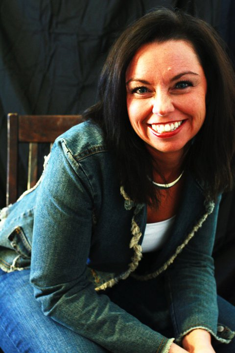

About
Full-stack developer leveraging a background in entrepreneurial start-ups and massage therapy to build a strong rapport between the technical aspect and client relations. Currently earning a certificate in Full Stack Development from the University of North Carolina- Charlotte, with newly developed skills in JavaScript, CSS, React.js and responsive web design. Known as a creative problem-solver passionate about developing apps, with a focus on mobile-first design and development.
For 24 years I've either worked for a spa as a licensed massage therapist and/or I've worked for myself owning a spa staffing company, antique event planning business and real estate company. I love what I do, but I've always had an interest in the technical aspect that has grown into a passion.
Some may think, "Wow! What a drastic change!", but really it isn't. I decided to switch gears into software developement because as a business owner and massage therapist, I have had to problem solve my clients issues and have had a creative and responsive approach depending on their needs and what the siutation demanded.
More about what makes me tick is that I'm also detail and rule oreinted as an individual. As I looked at software development, I saw the similarities and dug a little deeper to understand that not only is this a good fit for me but it's been an underlying passion all along.